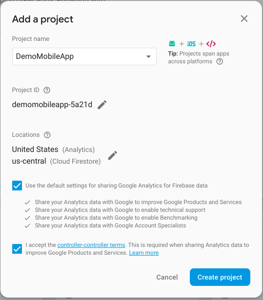

Introduction
The app is connected with Php Laravel 5.5 based backend using REST APIs, the following documentation will guide you through the process to setup the backend and app.
Setting up the backend
-
Server Requirements
The Laravel framework 5.5 has a few system requirement, make sure your server meets the following requirements:
- PHP >= 7.0.0
- OpenSSL PHP Extension
- PDO PHP Extension
- Mbstring PHP Extension
- Tokenizer PHP Extension
- XML PHP Extension
-
Setup Server
- Unzip the
ServerCode.zipfrom the package you downloaded from codecanyon. - After unzipping, you will find a folder named
queenspot, this folder contains the backend code - Upload this code on your server
- Unzip the
-
Server Configuration
- Change the parameters in
.envfile that you will find undersaloonfolder -
Following are the important parameters that you need to change:
DB_HOST=127.0.0.1 DB_PORT=3306 DB_DATABASE=put_your_database_name_here DB_USERNAME=put_your_database_username_here DB_PASSWORD=put_your_database_password_here FCM_SERVER_KEY= FCM_SENDER_ID= - You will get value of
FCM_SERVER_KEYandFCM_SENDER_IDfrom https://console.firebase.google.com - Create a new project in firebase(or use existing project). Follow
Overview->Project Settings->Cloud Messaging - If you are unable to find
FCM_SERVER_KEYandFCM_SENDER_ID, follow the steps at mentioned at https://developer.clevertap.com/docs/find-your-fcm-sender-id-fcm-server-api-key
- Change the parameters in
-
Database
You will find a file named
saloon.sqlin server code. Import this sql file in the database you created for the purpose of this project. -
Admin Access
- Suppose you are using domain name called
example.comand have put the files in root folder of this domain - After your are done with above mentioned
.envconfiguration, you can access our panel athttp://example.com/saloon/public/admin - Default email and password for accessing admin panel is
admin@example.comandadminrespectively
- Suppose you are using domain name called
-
API Endpoint
Taking the example mentioned in above step forward , your API’s Base Url will be
http://example.com/saloon/public/api. You will need this value during the app configuration, mentioned later in this documentation. -
Sending Push Notification to User
Our project comes with a provision to send notification to user before 48 hours of appointments, to send these notifications you will need to setup a cron job. Setting up a cron job is quite straightforward task but some user may find it bit hard, so be sure that you know how to setup a cron job in your hosting environment. You will need to add following Cron entry to your server:
`* * * * * php /path-to-your-project/artisan schedule:run >> /dev/null 2>&1`If you need to make some modification in notification sending logic, you can edit
app/Console/Kernel.php.You may find following links helpful while setting up cron for laravel:
Mobile App
-
Install Node.js
You must have Node.js installed on your system to begin building our app. Please follow the following step if nodejs is not installed on your system. If already done, you can skip this step
Note: Install Node.js version 8 or above on your system.Download the Node.js as per your operating system from https://nodejs.org/en/download/ To ensure that you have correct version of nodejs installed, from the command line issue the following command
node -vIf you see the string containing version number greater than 8, you are good to go. If you get
command not found error, that means nodejs is not properly installed on your system. You’ll need to troubleshoot the problem.You may be able to use node version lessser than 8 but we haven’t tested the app with these versions
-
Install ionic and cordova
In order to build our app you need to have installed ionic and cordova on your system. To install these packages issue the following command from command line:
npm install -g ionic@3.9.2 cordovaThis will install the ionic and cordova programs on your system. To ensure that you have successfully installed both the programs, issue following command from the command line
ionic -v && cordova -vIf version number gets printed on the console, you are good to go. If you get
command not found error, that means that these programs didn’t get properly installed on your system. You’ll need to troubleshoot the problem.Make sure you do not accidentally install ionic-v4(beta)
-
Connect the app with backend
In order to connect the app with backend, you need to make changes in the
src/app/app.config.ts. Update the values of the following variables- apiBase - For example, in our
example.comscenerio mentioned above, this value will be set tohttp://example.com/saloon/public/api
- apiBase - For example, in our
-
Push Notification
Firebase Setup-
Create a Firebase account or log into an existing account.
-
Click Add project. Follow the remaining setup steps and click Create project.

-
After the wizard provisions your project, click Continue.
-
In the Overview page of your project, click the Settings gear and then click Project settings.
-
Click Add Firebase to your Android app and follow the wizard

-
Click Register app.
-
Download the google-services.json file and place it in root directory of app code.
-
-
Other Installations
Ionic doesn’t bundle all of the tooling required to build an app, it relies on some additional SDKs and software provided by Apple and/or Google. It is good to read and follow the platform guides provided by Ionic to set up for each platorm you wish to work with Android Platform Guide iOS Platform Guide You can do this at a later time, but you’ll need to set up the platform tooling before you can preview or emulate an application on a simulator or device.
-
Deploy App
Deploying apps on Google Play Store and Apple App Store is out of the scope of this document. Kindly refer to this guide for further instructions.
Note: If you are unable to understand any topic or find any topic needs more elaboration. Please raise an issue ticket at this link https://opuslabs.freshdesk.com